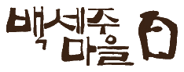
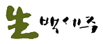

백세주마을은
백세주마을은
HOME > 백세주마을 > 백세주마을 BI
BEKSEJU VILLAGE BI
사람을 생각하며
정성스레 빚습니다
백세주마을 심볼 '白'은 백세주의 앞글자로,
정성스레 술을 빚는 국순당 전통의 정신을 백세주에 비유한 것입니다.
표준형
심볼과 글자를 가로로 나란히 둔 기본 형태입니다. 다른 형태가 필요한 경우가 아니라면 이 형태를 씁니다.
색상
짙은 갈색 한 가지를 씁니다. 옹기와 흙의 색이며, 국순당의 색과 이어집니다.
-
BEKSEJU BROWN
- PANTONE412 C
- CMYKM25+Y60+K87
- HEX#3E2D19
-
WHITE
- HEX#FFFFFF
어두운 바탕에 쓸 때는 로고를 흰색으로 뒤집어 씁니다.
응용형
공간의 모양에 따라 아래 형태 중에서 고릅니다. 임의로 늘이거나 배치를 바꾸지 않습니다.
- 세로형

가로 반전형- 좁은 세로형

生 백세주